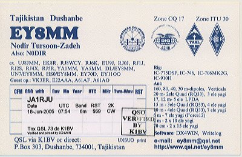
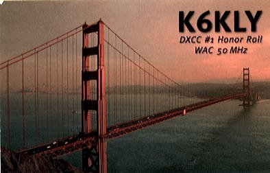
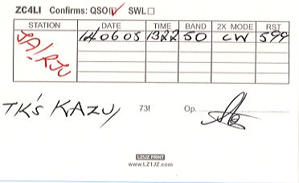

| 6m Today ! |

KH0/KH2K 50MHz EME DX-pedition
| 6m Today ! |

KH0/KH2K 50MHz EME DX-pedition
[Back Issues Aug.2005]
TIME:UTC(JST-09:00)
Report from JA1RJU (PM95sq)
31.Aug.2005(15:00c)
*BY-TV 05:00- 49.750 --
30.Aug.2005(15:00c)
*BY-TV 01:00- 49.750 --
29.Aug.2005(17:00d)
*BY-TV 01:00- 49.750 --
K1SG 16:16 50.*** JT65A EME(FN42-PM95so)
28.Aug.2005(15:00b)
Report from JA1RJU (QM06cb/PM95sq)
27.Aug.2005(15:00c)
*BY-TV 01:00- 49.750 --
W1JJ 14:22 50.*** JT65A EME(FN41-PM95so)
Report from JA1RJU (QM06cb)
26.Aug.2005(15:00c)
*BY-TV 00:00- 49.750 --
*P5-AM 09:30- 48.250 AM Radio
G8PL 21:30- 50.*** JT65A EME(JO01-QM06)
| ◎ 東日本に接近中だった台風11号は26日未明に東海沖、東京湾を通過後、千葉市付近から関東南部に上陸した。 中心付近の風速は30m/sと台風の勢力は弱まっていたとはいえ、関東全域に大雨と強風の影響を与えた。 0730時過ぎに霞ヶ浦の南側(稲敷市)を通過後、茨城沖の太平洋へと抜けたが、 台風の速度が25Kmと遅かったためQM05/QM06エリアなど関東東南部は最後まで暴風雨の影響を受けた。 |
25.Aug.2005(15:00c)
*BY-TV 00:00- 49.750 --
Report from JA1RJU (PM95sq/QM06cb)
24.Aug.2005(21:00c)
*BY-TV 02:00- 49.750 --
G8PL 20:50- 50.*** JT65A EME(JO01-QM06)
Report from JA1RJU (PM95sq)
23.Aug.2005(15:00c)
*BY-TV 06:00- 49.750 --
22.Aug.2005(15:00c)
*BY-TV 00:00- 49.750 --
21.Aug.2005(15:00d)
◎ 8/20-8/21 ハムフェア2005 (東京ビッグサイト)
*BY-TV 00:00- 49.750 --
VR2SIX/B 01:00- 50.075 CW Beacon
VR2SIX/B 09:00- 50.075 CW Beacon
20.Aug.2005(15:00b)
◎ 8/20-8/21 ハムフェア2005 (東京ビッグサイト)
*BY-TV 00:00- 49.750 --
|
◎ 「ハムフェア2005」が東京・有明の東京ビックサイトで開幕。 初日の今日は、09:30時から各国からのゲストを迎えてビックサイト西2ホールの会場前で開会式後、 テープカットで2日間の幕を開けた。 昨年に比べてビジネスコーナー、JAIAコーナーの出展数が少なく全体的に"こじんまり"した感じの今年の会場だったが、 例年並のクラブコーナーには多くのハムが早朝から詰めかけ賑わっていた。 メーカーのコーナーではI-COMが新製品の小型オールバンド、オールモード機のIC-7000をメインに据えて大PR。 スタンダード(旧YAESU)では本格的に市場にお目見えし始めた"FT-DX 9000シリーズ"に人気が集中していた。 また、参考出品された9000シリーズに続く"けん価版"ともいえる、HF＆50MHzオールモード機「FT-2000」が注目を集めていた。 予定では販売は来年、価格は30万円台になる模様。

 開会のテープカット/参考出品で注目されたスタンダードの"FT-2000" |
19.Aug.2005(15:00d)
*BY-TV 00:00- 49.750 --
*9M-TV 01:30- 48.240 --
BD4XA 02:04 50.115 SSB
BD4XA 03:30 50.110/115 SSB
DS1PDF 05:40 50.110 SSB
18.Aug.2005(15:00b)
*BY-TV 06:00- 49.750 --
17.Aug.2005(15:00d)
*BY-TV 00:00- 49.750 --
*9M-TV 02:30- 48.240 --
KG6DX 07:19 50.110 CW/SSB
KG6DX 08:21 50.110 CW strong!
KG6DX 09:01 50.110 CW CQ
KG6DX 09:54 50.110 CW CQ
16.Aug.2005(15:00c)
*BY-TV 00:00- 49.750 --
15.Aug.2005(15:00c)
*BY-TV 00:00- 49.750 --
14.Aug.2005(15:00c)
*BY-TV 00:00- 49.750 --
IW5DHN 14:47 50.*** JT65A EME(JN53-PM53)
13.Aug.2005(15:00c)
*BY-TV 00:00- 49.750 --
HL5BMX 01:30 50.135 SSB
HL2ST 01:35 50.146 CW
HL2SU 02:15 50.116 CW
12.Aug.2005(15:00d)
*BY-TV 00:00- 49.750 --
*9M-TV 01:30- 48.240/260 --
VR2SIX/B 03:00- 50.075 CW Beacon
DS1PDF 03:49 50.110 SSB
DS1PDF 04:06 50.110 SSB
11.Aug.2005(15:00d)
*BY-TV 00:00- 49.750 --
DS1LBT 04:51 50.110 CW
*P5-Audio 07:30- 48.250 AM HF-Radio sprias
DS1PDF 09:24 50.110/120 SSB


10.Aug.2005(15:00c)
*BY-TV 00:00- 49.750 --
09.Aug.2005(15:00c)
*BY-TV 00:00- 49.750 --
DS1PDF 01:13 50.110 SSB
DS1PDF 08:11 50.110 SSB
08.Aug.2005(15:00c)
*BY-TV 00:00- 49.750 --
*9M-TV 01:30- 48.240/260 --
VR2SIX/B 02:07- 50.075 CW Beacon
GD0TEP 09:35 50.*** JT65A EME(IO74-PM94)
07.Aug.2005(15:00c)
*BY-TV 00:00- 49.750 --
KG6DX 04:57 50.110 CW CQ
BU2/JJ1TBB 07:45 50.110/115 CW
06.Aug.2005(15:00c)
*BY-TV 00:00- 49.750 --
05.Aug.2005(15:00c)
*BY-TV 00:00- 49.750 --
Report from JA1RJU (QM06cb/PM95sq)
04.Aug.2005(15:00c)
*BY-TV 00:00- 49.750 --
*9M-TV 01:00- 48.240/260 --
Report from JA1RJU (QM06cb)
03.Aug.2005(15:00d)
*BY-TV 00:00- 49.750 --
*9M-TV 01:00- 48.240/260 --
DS1PDF 01:34 50.110 SSB
*BY-TV 07:00- 49.750 --
*9M-TV 07:00- 48.240/260 --
VR2SIX/B 07:30- 50.075 CW Beacon (Es JA6)
HL1JV 08:06 50.110/150 SSB
DS1MFC 10:45 50.110 SSB
02.Aug.2005(15:00c)
*BY-TV 00:00- 49.750 --
NL7Z 06:46 50.110 CW QSO with JA7
*ZL-TV 08:00- 45.240 --
*VK-TV 08:00- 46.172 --
BD9BA 08:13 50.110 SSB/CW
Report from JA1RJU (PM95sq/QM06cb)
01.Aug.2005(15:00c)
*BY-TV 00:00- 49.750 --
DS1PDF 11:35 50.110 SSB

